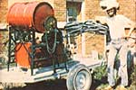
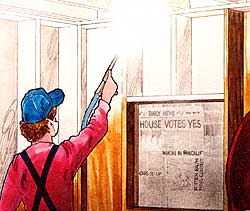
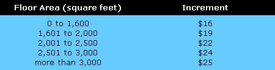

"Men and women needed to whitewash barns. Flexible hours, opportunity to meet farmers, income of $900 per month possible. No experience necessary." Chances are, you won't come across an ad like this in the classified section of your Sunday paper . . . but the job does exist, and you can fill it. Here-to tell you how-is Loran T. Lentz.
Altogether, there are probably about 9,993 ways to make money in the country. My way, though, has to be one of the simplest and most rewarding (in every sense of the word) of all. I whitewash barns.
Here in Wisconsin (and-I suspect-in many other states as well), dairy farmers are required to either whitewash their barns on the inside every year or repaint them. (Alternately the walls and ceilings may be steam-cleaned on a frequent basis, but that gets to be expensive.) Because whitewash costs so much less than paint, most dairymen opt to have their barns
sprayed by a local whitewasher. And that's I come in.
Three years ago, you see, my partner John; and I each put up about $200 in cash to buy [1] an old whitewashing machine, [2] a new portable barn blower, and [3] a few sacks of whitewash. Wthin weeks, our shoestring enterprise-Tom Sawyer Whitewashing and Barn Cleaning-had earned enough money to pay back our initial investment . . . and by the end of our first summer, John and I had built our individual monthly incomes to nearly $900!
We can't guarantee that, you'll be as successful with your own whitewash operation. I can guarantee this, however: After reading the following story you'll be a lot better prepared to start a successful whitewash business than John and I were when we first began!
You probably know what whitewashing is if you grew up on a farm and can remember the yearly visits of the whitewasher, whose job it was to chase the spiders out of the barn and make the inside of the building look good as new again. In case you don't know what it is, however, whitewashing is simply an age-old, low-cost way of beautifying and sanitizing fences. outbuildings, and other structures that often need to be beautified and sanitized.
Until not many years ago, the principal ingredient of most whitewashes vas lime (calcium oxide) . . . which is still used that way by many folks. Unfortunately, lime has one serious drawback: It's highly corrosive. Which means it's harmful to machinery, bad for animals (calves, lick everything around them, including whitewashed walls), and irritating to the skin and lungs of the person spraying it.
Nowadays, you can buy several commercial brands of clay-based whitewash. These products are a bit more expensive than lime (the kind we use-Voco II-costs about $4.00 per 50-pound sack versus $S3.00 or so for the same amount of lime), but are non-corrosive and don't become brittle and flaky with age the way lime does. (Check with feed stores and farm supply, outlets in your area to see what kinds of whitewashes are available and at what prices.)
The first piece of equipment IN you'll need is a whitewash machine see photo) . . . an apparatus consisting of a mixing tank, a pumping barrel, a pump, a high-pressure hose (with spray gun), and a gasoline engine or electric motor to run everything. If you're industrious, you can assemble y our own machine from individual components. (Hint: A 55-gallon drum makes a great' mixing tank.) Otherwise, you can buy your rig pre-assembled, either new or used.
New machines (many of which are mounted on skids so they can be loaded easily into the back of a pickup can be purchased at some farm implement dealers. (Also look under "Spraying Equipment" in the Yellow Pages.) New, such a rig runs from $600 to well over $1,000.
You can save quite a bundle, of course, if you're willing to take the time to scout out used equipment. (Check with farmers, feed stores, and local creameries for leads in tracking down "previously owned" machines.) We spent $200 for our first sprayer, a do-it-yourself job built sometime in the 50's and mounted on a trailer. Then, a couple of years later, we bought a two-year-old machine mounted on skids for only $90. Both were pretty good buys, though, so be prepared to pay more for your rig .
Another useful (though not essential) piece of equipment to have is a high-velocity air blower that you can use to rid walls and ceilings of loose hay, dust, cobwebs, and old, flaky whitewash. Our "duster"-a Voco Mini Barn Blower-blasts out air with a nozzle tip speed of 550 mph, is light enough to carry around on one shoulder, and cost us about $170. (If you're so inclined, you may be able to piece together your own inexpensive blower. We heard of one old-timer who rigged up an air compressor powered by a Model A Ford engine. All he had to do was drag an air hose through the barn, instead of carrying the whole apparatus around with him.)
Why should you even bother to clean a barn in the first place? Number one, you'll find you can do a much better whitewash job on a surface that's free of dirt and debris. Number two, you can (rightfully) charge more money for performing this added service. And number three, because of the extra work involved you can schedule fewer barns per day and spend more time in one geographical area.
Of course, before you hit the road you'll want to stock up on whitewash. Take three or four bags of dry mix with you on every outing, and try not to stray too far from a farm supply store or other establishment that carries the kind of whitewash you like to use.
One more thing: Whitewash belongs on the barn, not in your lungs . . . so wear a mask . (John and I found the disposable 3M masks worn by auto body shop workers to be the most satisfactory.) Also, a broad-brimmed hat-such as Tom Sawyer himself might have worn-will do wonders for keeping flecks of old lime out of your eyes (and spiders off your neck).
Once you're ready to begin spraying, you gotta let farmers know about it. The classified section of the local newspaper (or shoppers' tabloid) is fine for a start and will probably bring you enough work at first to pay off your equipment . . . but by far the best way to generate business is to [1] compile a list of all the dairymen in your area (or wherever you're willing to travel to work), and [2] write to or visit the farmers. (When we were just starting, John and I would've paid $1,000-gladly-for the file of names we now have.)
How can you obtain the names and addresses of local dairymen? Check with the nearest creamery. Most creameries-it turns out-are happy to give you a copy of their milk truck itinerary (which has the information you need) . . . for the simple reason that if the farms on that list don't pass inspection (due to unsanitary barn conditions) the creameries themselves either lose money or are shut down. Creameries and milk inspectors, in other words, are natural allies of the whitewasher. (Note: One advantage of getting names from a milk truck schedule is that the farms are already grouped by geographical location.)
Another thing you'll want to do is have business cards printed. We asked creameries to mail ours out in their monthly milk check mailings (which they did). The cards also came in handy when we ran into the state milk inspector at a farm one day. (The man took a stack of our cards, and-from then on-whenever he came across an unsanitary barn, he left a message from Tom Sawyer!)
Before you take on any assignments, whitewash a friend's barn for free (or for the cost of materials), just to get the hang of things. One barn can teach you a lot about whitewashing . . . enough-at least-so that when your first "real" job comes along, you won't look too klutzy to a skeptical farmer. (Remember: A dairyman and his family spend hours every day in their barn. It's important to them that the job be done right . . . and it's important to you, because a reputation for quality work in farm country sure makes life easier.)
If you're going to clean a barn before you spray it, you'll find the job goes a little faster and easier if you:[1] Open all windows and doors and turn on exhaust fans. [2] Always walk backwards. (It helps keep dust and grit from falling all over you.) [3] Have an assistant go ahead of you with a broom, if cobwebs are particularly plentiful. [4] Wear a mask and a hat.
If you want to be loved and get repeat business, find out- before you begin-exactly what the farmer wants sprayed and what he doesn't want sprayed. One whitewasher we knew sprayed anything and everything-animals, telephones, medicines, you name it-whether it moved or not. We got a lot of his business.
You'll find that some farmers are very particular and will have everything they don't want sprayed covered and ready to go as soon as you arrive. Others, however, won't do any such "setup" work for you. In the latter case, it's your responsibility to cover any items that the farmer says aren't to be whitewashed . . . with the exception of the milk pipeline. (Covering the pipeline just takes too doggoned long . . . and besides, it's usually in need of a good scrubbing anyway!)
Be sure to ask about windows. Some farmers want 'em sprayed, since they believe it'll help keep the barn cooler in summer. (Clay-based whitewash washes off easily with warm water and vinegar in the fall.) Others don't want their windows sprayed (perhaps because the panes are ready to fall out). We charge 20 cents per pane to cover windows with newspaper, although we try to be flexible on this during price negotiations.
Voco II is a fine powder and will form lumps if you add it too rapidly to water. What we do is adjust a garden hose nozzle to give a hard spray and gradually add the powder to the mixing tank in the turbulence created by the spray . . . rather than fill the tank with 16 gallons of water (enough to dissolve 50 pounds of whitewash) first, then depend on the paddles in the tank to agitate the water sufficiently.
We use hot water (from the milk-house) for mixing if we're going to be spraying a closed or plywood ceiling, an open ceiling made with finished lumber, a new ceiling of any type, or a previously painted ceiling. Cold water can be used, but hot whitewash seems to adhere better to smooth surfaces.
If you wish to make a lime-based whitewash, you can do so as follows: First, soak 50 pounds of hydrated lime in six gallons of water until you've got a paste. Then dissolve six pounds of salt in three gallons of boiling water, allow the mixture to cool, and add the brine to the (roughly) eight gallons of lime paste. Finally, stir in three pounds of white portland cement.
Try to mix up enough whitewash at the outset to last you through the job at hand. (This takes experience, of course . . . but as a rough rule of thumb, you can figure that a gallon of whitewash will cover about 250 to 300 square feet of wall space.)
This is the point at which you add insecticides to the whitewash if the farmer asks you to do so and you foolishly agree. We dumped bug-killer into the Voco (at cost) during our first year, as a service to our customers (despite the fact that the darned stuff is expensive and doesn't last more than a few weeks anyway). The day I staggered-dizzy-out of the barn after spraying poison for half an hour, however, I decided, "Hey, this is no good . . . no way!" and we never sprayed chemicals again.
I might add that we have yet to lose a job due to our refusal to use poisons. If a farmer really wants chlorinated hydrocarbons in his barn, it's cheaper for him to apply them with a hand sprayer after the whitewash has dried. (The read key to holding a barn's insect population down-as any good farmer knows-is to keep the building manure free inside AND out.)
When you're ready to begin, close all windows and doors and turn off any fans that might be running in the building . . . then unwind the hose from your machine and stretch it out to the farthest corner of the barn. Start the pump motor and let the pressure build to around 200 pounds per square inch. (Note: If you're spraying lime, you'll probably have to go to 300 psi, which will-in turn-put considerably more strain on your equipment. Still another reason to stick with clay based whitewash.) The tip of your spray gun should have a No. 4 (1/16" diameter) disc in it for a clay-based wash, and you should have a bucket of water nearby for washing the tip, should it become clogged with foreign particles.
This is it! Now just [1] turn the handle on the gun, [2] adjust the spray, and [3] start walking backwards around the barn (the way you did when you were cleaning the walls with the blower), striving-at the same time-to avoid manure-filled gutters. (There's usually one such ditch at the far end of the barn. Naturally, knee-high boots are a great help until you've developed a sixth sense about where you're going.)
Don't worry about your technique: There's no "right" way to spray a barn. Just hit whatever needs hitting (don't forget the wood between the ceiling joists), and try to develop a system of some kind so that you do each barn pretty much the same way. If you're using Voco II-which goes on clear and then turns white after it dries -be particularly thorough.
Barns that are exceptionally dirty and flaky and rife with flyspecks and manure may need a couple of coats of wash to look good again. Generally, though, one good coat will do the trick.
It's easy to develop a love/hate relationship with a whitewash machine. Even at a low 200 pounds of pressure, the pump works mighty hard and breakdowns are not uncommon. Whether these malfunctions turn out to be minor annoyances or major disasters, however, depends largely on what precautions you take. To put it differently: It pays to keep a supply of easily worn-out parts (such as valves, springs, balls and seats, etc.) on hand at all times. The availability or non-availability of a $1.98 part at a critical time can mean the difference between a few minutes delay as you install the spare part, and a two- to three- week wait for the factory-fresh replacement.
When the pressure drops while you're spraying, it's usually either because [1] the mixing barrel is low on whitewash, or [2] a filter (in the mixing tank or in the pump) is clogged. Other kinds of malfunctions are possible, too, depending on the particular type of pump you have.
Some things, unfortunately, can only be learned through harsh experience. There is one thing you can do to help minimize the "breakdown blues", though, and that's simply to take the time at the end of each working day to [1] rinse the mixing tank thoroughly and [2] pump clean water through the hose until the liquid comes out clear.
Here in northern Wisconsin, the whitewashing season starts when the farmers turn their cows out to spring pasture and lasts until so late in the fall that the spray hose freezes up faster than you can thaw it out. During the "on" months, it's possible to work as much-or as little-as you like, when you like. You're truly your own boss.
John and I have "barnstormed" the hinter regions of northern Wisconsin and Minnesota for weeks at a time in the summer, whitewashing during the day and camping out every night. In our travels we've met young farmers trying hard to make it with 80 cows, and old-timers who've learned to do well with only 20 milkers. We've learned the backroads (in some parts) better than anyone save the milk truck drivers themselves. On occasion, too, we've been treated to a delicious homecooked meal at the end of the day as extra payment for a job well done.
Whitewashing has worked for us, even in the northernmost reaches of Wisconsin, where barns are few and farming-in general-is a marginal enterprise. If you live anywhere near farm country-and you're looking for a job that offers flexible hours, more-than-reasonable pay, opportunity to travel and meet people, and a chance to perform a needed service-whitewashing may work for you, too.
Once you begin to look at barns from the inside , you'll be amazed at how they differ. (Clearly, there's no such thing as a "typical" or "average" barn.) Yet, somehow, the whitewasher must come up with a pricing formula that's flexible enough to accommodate all the idiosyncracies of each barn he/she is likely to encounter.
My partner and I have found the answer to this problem (we think): We've developed a sliding scale that's based primarily-but not solely-on a barn's floor area. Our system allows us to spray a larger barn for less money per square foot than a smaller barn (which is only fair, since certain costs-those connected with travel and setup time, for instance-are constant regardless of the size of the job) . . . and still make a fair profit.
Here's our "magic formula":
Price = Floor Area (in square feet) X $0.01 + Increment
The "increment" varies with the size of the barn, as follows:
Let's say, for example, that you're asked to whitewash a barn with inside dimensions of 34' X 80' (which represents a floor area of 2,720 feet). Your estimate-according to the above formula-is 2,720 times $0.01 plus $24 . . . or $27.20 plus $24, which equals $51.20.
After we've determined our initial cost estimate, we deduct 15% if the barn has a closed ceiling. (If, however, the building has wooden stanchions and calf pens, we tack on an extra $5.00 for barns less than 70 feet long and $10 if the barn's longer than 70 feet.)
In addition, we charge a flat rate of 1.1 cents per square foot to clean a barn (with a 15% deduction, again, for a closed ceiling).
Note: Our pricing formula is based on a price of about $4.00 per 50-Ib. bag of claybased whitewash. If whitewash costs substantially more where you live, you may have to adjust your cost estimates upwards accordingly.
In any case, if you start out using the pricing formula shown above, at least you won't be underbidding your first jobs as much as my partner and I did when we first began our business!-LL.
|
 |
 |
 |